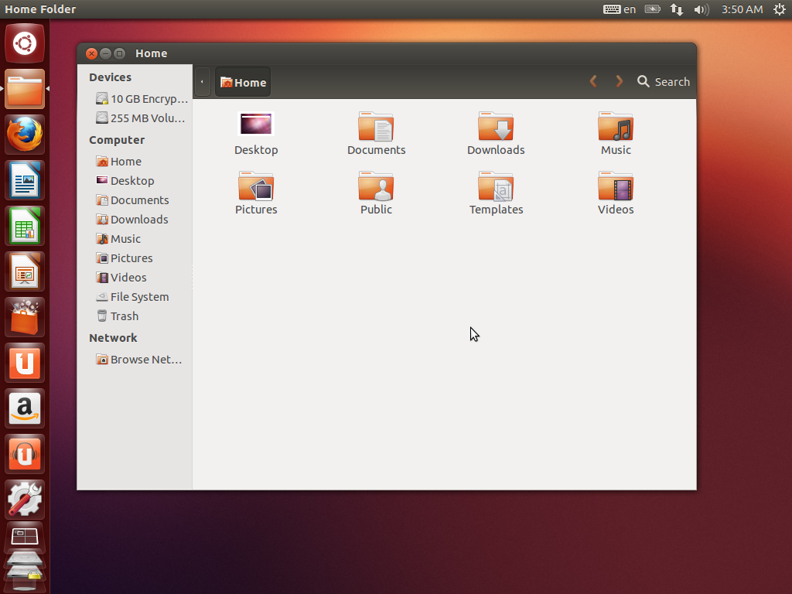
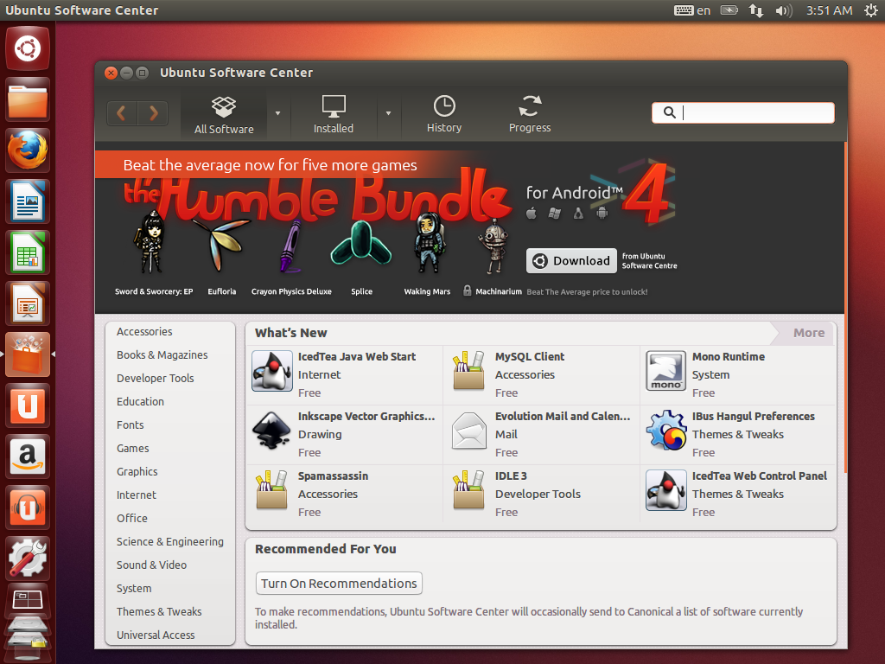
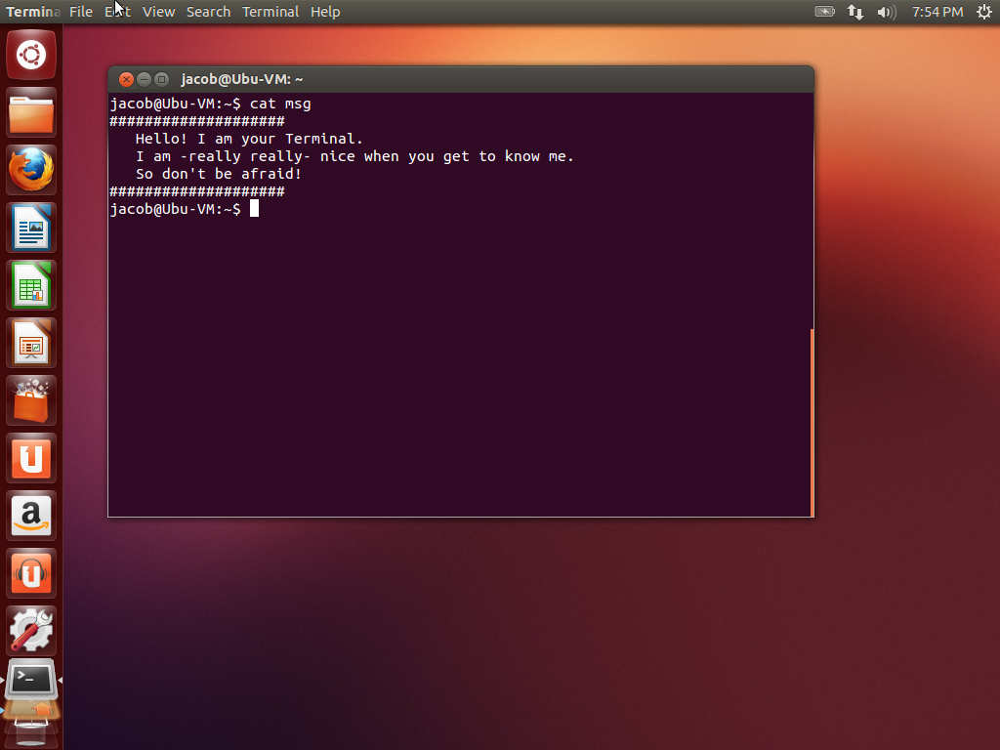
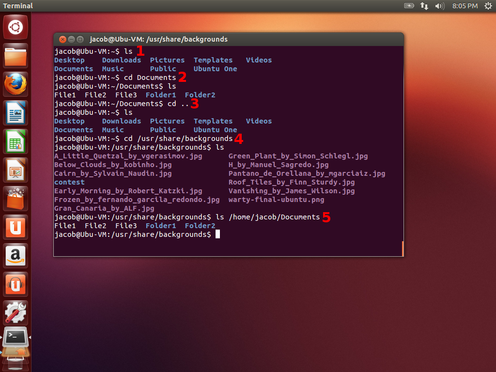

As explained before, Ubuntu's main interface is called Unity. The menu bar is along the top of the screen, where you will be able to see the standard File, Edit, Window, and other menu buttons. This is much like the functionality of Mac OS X. Towards the right side of the menu bar, you find options based on the applications you are running, as well as the standard tray icons (Network, Volume, Settings) and the system time.

Along the left side of the screen, you see Ubuntu's version of the Windows Start bar or the Mac OS X Dock. This dock shows you your frequently used applications. You can pull applications to this Dock for quick reference, or remove them simply by pulling them off the Dock.
The first button on the Dock (with the Ubuntu logo) brings up the Search pane. This is the second most convenient way to launch applications in Ubuntu. The Search pane is your center for finding programs and files on your hard drive. You can type the first few letters of the application you are looking for, and it will come up at the top of your search. You can also type the name or other details about a document/file you are looking for on your hard drive, and the Search pane will look for it for you. At the bottom of the pane, you can see some buttons to filter your searches. You can choose to search only for applications, documents, music, photos, or video. The Search pane also allows you to search for products for sale on Amazon.com (though this can be turned off in System Preferences > Privacy).
The second button in form of a file folder is your File Explorer. This is analogous to the Windows Explorer (or clicking "My Documents") in Windows, or the Finder in Mac OS X. As you can see by the photo above, the interface is very similar to both of these other desktop environments.
The next app in the list by default is Firefox. This runs the popular Internet browser.
Next, we see three document icons. These run LibreOffice, an office suite similar to Microsoft Office, but open source and centered around open-source file formats. LibreOffice is very intuitive and easy to use. The icons represent Writer for word processing, Calc for spreadsheets, and Impress for creating presentations.
Ubuntu has a center for finding new programs and utilities you might find useful, called the Ubuntu Software Centre. The Software Centre is identified by the picture of the shopping bag in the Dock. Here you can find apps in a wide variety of categories, free or paid. Most of them are actually free. You can manage software you've installed, uninstall old packages, or manage system updates from the Software Centre.

Next is the Ubuntu One logo. Ubuntu One is a cloud solution provided by Canonical (Ubuntu's parent company). It is similar to Google Drive. You can sign up for a free account to store your music, photos and documents online, then access them from anywhere in the world on a variety of different platforms. There are also paid options that unlock some additional functionality.
Last on the Dock list for now is the System Preferences pane. This is indicated by the picture of the gear-and-wrench in the Dock. Here you can customize some of your system's most important features, like language, date/time, privacy settings, network preferences, and more.
Other applications you will find of interest, but that may not be in the dock:
Head further into the Dock and the Ubuntu Software Centre, and see what neat applications you can find! Or go to chapter 2.5 in the Guide to get a list of more applications that may be helpful.
The bane of every new Linux user is the Terminal. However it is mostly much ado about nothing. With Ubuntu, you can use Linux on a day-to-day basis without even needing to touch the terminal. And its function is surprisingly simple when it comes down to accomplishing basic tasks.

When you launch the Terminal, you begin in your Home directory. You can tell this by the tilde (~) in the command prompt. Your location in the hard drive will always be given in this space.
To list the contents of the directory you are currently in, type ls and press Enter (#1). You just ran your first command via the Terminal!
To navigate to a different folder, run cd and follow that with the folder name. As you can see below, I ran cd Documents, and it put me in my Documents folder (#2). Simple enough. When you want to go back to the folder (like the "Up" button in Windows Explorer), run cd .. and you will be taken back (#3). You can run these commands via absolute paths, i.e. folders that are not in the folder you are currently in (#4, #5).

This is the basics for navigating through folders in the Terminal. For file manipulation, you can follow the same process for putting command + file location together. Copying files is achieved with cp, followed by the file you want to copy, then its location. So: cp sourcefile.txt /home/user/Documents/ will copy the "sourcefile.txt" in the current folder to your Documents folder. In the same way, you can use "mv" to move, or "rm" to remove files. You can also use "mkdir" to make new folders.
Beyond simple file management, using the Terminal can be boiled down to one simple fact: terminal commands are applications plus options. Every application that you run on Linux has a corresponding Terminal command that can be used to run it. Furthermore, these commands can use option "flags" to adjust its manner of operation.
To explain this, let's take a look at a basic command called tar. TAR is used to create archives of files or folders, much like the ZIP file format on Windows. To create a standard zipped-up TAR archive of a file, we run the following command:
tar -cvzf archivename.tar.gz filename.ext
This creates an archive named "archivename.tar.gz" that contains the file "filename.ext". But what about those letters following the tar command? Those are the flags. In Linux, flags are denoted with the "-" that comes before them, and usually come right after the initial command in the string. If you want to use more than one flag, you can stack them, like I did above, with just one "-".
Let me explain what each of those flags does for this specific tar command:
Each command you will want to use on the command line has a corresponding "manpage." (It might sound like a sexist name, but it just means "manual"!) Here you can get detailed information on how to use the command, as well as a list of flags and commonly-used options for it. Simply run man plus the command you want to learn about. man tar, for example, will show you the manual and flags list for the tar command.
There, the Terminal is easy, just like I told you! It might not seem very convenient at first, but the more you get to use it, the quicker frequent tasks can pass by, leading to great increases in your productivity. For example, to create a TAR archive of a file (or folder), by the standard way you would need to launch the Archive Manager application, mouse over to "New Archive," click it, type in a name, type in a place for the archive to be, mouse over the checkboxes for options, click and drag your folders, etc etc etc. But with the Terminal, after learning how the command works the first time, you can simply run a quick command from memory to do exactly what you want. You can even create scripts (called "bash scripts") to automate tasks using the Terminal's language. We will cover this in a future guide. But for now, pat yourself on the back, because you've conquered your fear of the Terminal!